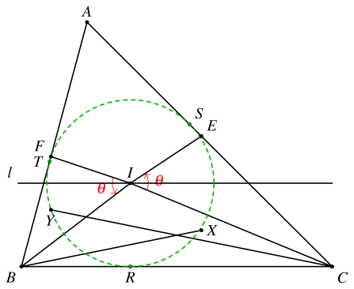

1. 题目
如图，设 △ABC 的内心为 I，点 E、F 分别在边 AC、AB 上，满足 ∠BIF=∠CIE。设 l 为过 I 且平行于 BC 的直线，设点 E、F 关于直线 l 的对称点分别为 X、Y。证明：∠XBC=∠YCB。
2. 分析
这个题可以使用复数法进行处理。以内切圆为单位圆，可以得到 △ABC 的顶点对应的复数。关于 l 对称可以简化为共轭运算。
利用 ∠BIF=∠CIE 和点 F 在 AB 上，可以求出点 F 对应的复数。点 E 的处理类似。
3. 解答
3.1. 建立复平面
引入以 I 为原点、l 为实轴的复平面。设 △ABC 的内切圆的半径为 1，其与 BC、CA、AB 的切点依次为 R、S、T，对应的复数依次是 r=−i、s、t。
设点 A、B、C、E、F、X、Y 对应的复数依次是 a、b、c、ε、f、x、y，则
x=ε,y=f
以及
a=t+s2,b=t−i2,c=s−i2,a=t+s2tsb=−t−i2tic=−s−i2si(i)

3.2. 计算点 E、F
设 ∡FIB=∡CIE=θ，则
f=b⋅λe−iθ=ka+(1−k)b，其中 λ,k∈R。
因此
{b⋅λe−iθ=ka+(1−k)bb⋅λeiθ=ka+(1−k)b
整理得
{λ⋅be−iθ+k⋅(b−a)=bλ⋅beiθ+k⋅(b−a)=b
解得
λ=be−iθbeiθb−ab−abbb−ab−a=(b−a)be−iθ−(b−a)beiθab−ab(ii)
将 (i) 代入可得
ab−abb−ab−a=(t+s)(t−i)4t(s+i)=(t+s)(t−i)2(s+i)=−(t+s)(t−i)2t2(s+i)
再带回 (ii) 化简可得
λ=teiθ−ie−iθt−i
同理，设 ε=c⋅μeiθ=la+(1−l)c，其中 μ,l∈R，则有
μ=se−iθ−ieiθs−i
3.3. 证明角相等
要证明的结论
∡CBX=∡YCB⟺c−bx−b÷y−cb−c∈R
注意到 b−c∈R，因此
∡CBX=∡YCB⟺(x−b)(y−c)∈R⟺(ε−b)(f−c)∈R
化简可得
(ε−b)(f−c)=(μce−iθ−b)(λbeiθ−c)=(se−iθ−ieiθs−i⋅s−i2⋅e−iθ−t−i−2ti)⋅(teiθ−ie−iθt−i⋅t−i2⋅eiθ−s−i−2si)=(t−i)(se−iθ−ieiθ)2(t−i+tsi)e−iθ+2teiθ⋅(s−i)(teiθ−ie−iθ)2(s−i+tsi)eiθ+2se−iθ
接下来验证
(ε−b)(f−c)=(ε−b)(f−c)
即可。
验证过程
(ε−b)(f−c)=(t1−i1)(s1eiθ−i1e−iθ)2(t1+i−tsi)eiθ+t2e−iθ⋅(s1−i1)(t1e−iθ−i1eiθ)2(s1+i−tsi)e−iθ+s2eiθ=−(i−t)(ieiθ−se−iθ)2(s+tsi−i)eiθ+2se−iθ⋅−(i−s)(ie−iθ−teiθ)2(t+tsi−i)e−iθ+2teiθ=(ε−b)(f−c)
命题得证。
4. 另一种解法
考虑 △BIF 和 △CIE，
sin∠BIFBFsin∠CIECE=sin21∠ABCIF=sin21∠ACBIE
因此
CEBF=IEIF⋅sin21∠ABCsin21∠ACB
设点 F 关于 IB 的对称点为 K，点 E 关于 IC 的对称点为 L，则 K、L 都在 BC 上。
设 l 与 AB、AC 交于点 M、N，则
∠YIK=∠FIK−∠FIY=2(∠FIB−∠FIM)=2∠BIM=∠ABC
同理可知 ∠XIL=∠ACB。
注意到
∠BIK=∠BIF=∠CIE=∠CIL
因此
CK⋅CLBK⋅BL=CI2BI2
结合前面的结论可得
CKBL=BKCL⋅CI2BI2=BFCE⋅CI2BI2=IFIE⋅sin21∠ACBsin21∠ABC⋅sin221∠ABCsin221∠ACB=IF⋅sin21∠ABCIE⋅sin21∠ACB=YKLX
注意到
∠BLX=∠BLI+∠ILX=(∠CIL+21∠ACB)+(90∘−21∠ACB)=∠CIE+90∘
同理可得，∠CKY=∠BIF+90∘，因此 ∠BLX=∠CKY。
综上可知 △BLX∼△CKY，于是 ∠XBC=∠YCB，命题得证。